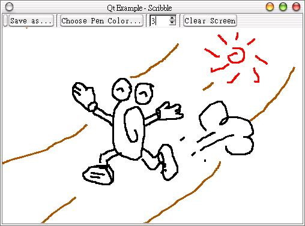

| 在Qt的線上範例中，有一個scribble範例，這是一個簡單的小畫家，可以讓您在上面進行線段繪圖，並將繪圖結果儲存起來，當中還使用了一些緩衝區繪圖的概念，這邊將為您剖析這個範例如何進行。 首先是編寫定義檔scribble.h：
#ifndef SCRIBBLE_H 其中QPointArray是用來定義一個點陣列，可以用於滑鼠拖曳繪圖，製作出連續繪圖的效果；我們使用QPixmap buffer製作出一個繪圖緩衝區，我們的圖形會先繪製在這上面，然後再貼到視窗畫面上。 再來是scribble.cpp的實作，我們分區一段一段貼上來解說： #include "scribble.h"
這是建構函式，主要是設定外觀與決定是否載入圖片，這是由命令列引數來輸入圖片檔名，我們使用QPixmap的load()方法將圖片載入。 #include <qapplication.h> #include <qevent.h> #include <qpainter.h> #include <qtoolbar.h> #include <qtoolbutton.h> #include <qspinbox.h> #include <qtooltip.h> #include <qrect.h> #include <qpoint.h> #include <qcolordialog.h> #include <qfiledialog.h> #include <qcursor.h> #include <qimage.h> #include <qstrlist.h> #include <qpopupmenu.h> #include <qintdict.h> const bool no_writing = FALSE; Canvas::Canvas( QWidget *parent, const char *name ) : QWidget( parent, name, WStaticContents ), pen( Qt::red, 3 ), polyline(3), mousePressed( FALSE ), buffer( width(), height() ) { if ((qApp->argc() > 0) && !buffer.load(qApp->argv()[1])) buffer.fill( colorGroup().base() ); setBackgroundMode( QWidget::PaletteBase ); #ifndef QT_NO_CURSOR setCursor( Qt::crossCursor ); #endif } QPixmap的save()方法可以讓您指定檔名與儲存格式來儲存圖檔： void Canvas::save( const QString &filename, const QString &format )
{ if ( !no_writing ) buffer.save( filename, format.upper() ); } void Canvas::clearScreen() { buffer.fill( colorGroup().base() ); repaint( FALSE ); } void Canvas::mousePressEvent( QMouseEvent *e ) { mousePressed = TRUE; polyline[2] = polyline[1] = polyline[0] = e->pos(); } void Canvas::mouseReleaseEvent( QMouseEvent * ) { mousePressed = FALSE; } colorGroup().base()傳回QWidget的背景顏色，我們將緩衝區整個設定為該背景顏色，然後呼叫repaint()重繪視窗，作用相當於清除整個畫面。 設定滑鼠按下與放開時的處理，按下滑鼠時，QPointArray的前三個元素都先設定為滑鼠按下時的位置。 開始QPainter繪圖，繪製對象先設定為QPixmap物件buffer上，連續繪圖的程式碼您可以參考當中對QPointArray 的設定，然後我們根據QPointArray來設定一個可包含它的QRect長方形範圍，normalize()方法校正使得QRect沒有負的寬與高， 然後我們進一步對所選取的畫筆大小校正，最後使用bitBlt()方法將QPixmap物件buffer貼到QWidget主畫面上： void Canvas::mouseMoveEvent( QMouseEvent *e )
{ if ( mousePressed ) { QPainter painter; painter.begin( &buffer ); painter.setPen( pen ); polyline[2] = polyline[1]; polyline[1] = polyline[0]; polyline[0] = e->pos(); painter.drawPolyline( polyline ); painter.end(); QRect r = polyline.boundingRect(); r = r.normalize(); r.setLeft( r.left() - penWidth() ); r.setTop( r.top() - penWidth() ); r.setRight( r.right() + penWidth() ); r.setBottom( r.bottom() + penWidth() ); bitBlt( this, r.x(), r.y(), &buffer, r.x(), r.y(), r.width(), r.height() ); } } 當重新將視窗置頂時，重置元件大小與重繪所有的畫面： void Canvas::resizeEvent( QResizeEvent *e )
{ QWidget::resizeEvent( e ); int w = width() > buffer.width() ? width() : buffer.width(); int h = height() > buffer.height() ? height() : buffer.height(); QPixmap tmp( buffer ); buffer.resize( w, h ); buffer.fill( colorGroup().base() ); bitBlt( &buffer, 0, 0, &tmp, 0, 0, tmp.width(), tmp.height() ); } 重繪畫面，我們可以利用QPaintEvent取得需要被更新的QRect物件，也就是需要被更新的區域（例如曾被其它視窗覆蓋的區域），然後將緩衝區上圖一個一個繪製上去（覺得麻煩的話，個人覺得就全部畫上去吧！）： void Canvas::paintEvent( QPaintEvent *e )
{ QWidget::paintEvent( e ); QMemArray<QRect> rects = e->region().rects(); for ( uint i = 0; i < rects.count(); i++ ) { QRect r = rects[(int)i]; bitBlt( this, r.x(), r.y(), &buffer, r.x(), r.y(), r.width(), r.height() ); } } 接下來這邊就都是一些版面配置與Signals - Slots連結，就不作太多說明了，有不懂的地方可以查詢看看Qt的線上範例： Scribble::Scribble( QWidget *parent, const char *name )
最後是main.cpp的內容： : QMainWindow( parent, name ) { canvas = new Canvas( this ); setCentralWidget( canvas ); QToolBar *tools = new QToolBar( this ); bSave = new QToolButton( QPixmap(), "Save", "Save as PNG image", this, SLOT( slotSave() ), tools ); bSave->setText( "Save as..." ); tools->addSeparator(); bPColor = new QToolButton( QPixmap(), "Choose Pen Color", "Choose Pen Color", this, SLOT( slotColor() ), tools ); bPColor->setText( "Choose Pen Color..." ); tools->addSeparator(); bPWidth = new QSpinBox( 1, 20, 1, tools ); QToolTip::add( bPWidth, "Choose Pen Width" ); connect( bPWidth, SIGNAL( valueChanged( int ) ), this, SLOT( slotWidth( int ) ) ); bPWidth->setValue( 3 ); tools->addSeparator(); bClear = new QToolButton( QPixmap(), "Clear Screen", "Clear Screen", this, SLOT( slotClear() ), tools ); bClear->setText( "Clear Screen" ); } void Scribble::slotSave() { QPopupMenu *menu = new QPopupMenu( 0 ); QIntDict<QString> formats; formats.setAutoDelete( TRUE ); for ( unsigned int i = 0; i < QImageIO::outputFormats().count(); i++ ) { QString str = QString( QImageIO::outputFormats().at( i ) ); formats.insert( menu->insertItem( QString( "%1..." ).arg( str ) ), new QString( str ) ); } menu->setMouseTracking( TRUE ); int id = menu->exec( bSave->mapToGlobal( QPoint( 0, bSave->height() + 1 ) ) ); if ( id != -1 ) { QString format = *formats[ id ]; QString filename = QFileDialog::getSaveFileName( QString::null, QString( "*.%1" ).arg( format.lower() ), this ); if ( !filename.isEmpty() ) canvas->save( filename, format ); } delete menu; } void Scribble::slotColor() { QColor c = QColorDialog::getColor( canvas->penColor(), this ); if ( c.isValid() ) canvas->setPenColor( c ); } void Scribble::slotWidth( int w ) { canvas->setPenWidth( w ); } void Scribble::slotClear() { canvas->clearScreen(); }
#include "scribble.h" 下圖為程式執行的畫面之一：  |